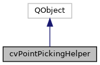

|
ACloudViewer
3.9.4
A Modern Library for 3D Data Processing
|
|
ACloudViewer
3.9.4
A Modern Library for 3D Data Processing
|
cvPointPickingHelper is a helper class for supporting keyboard shortcut-based point picking in measurement tools. More...
#include <cvPointPickingHelper.h>


Public Types | |
| enum | PickOption { Coordinates , Normal , CoordinatesAndNormal } |
Signals | |
| void | pick (double x, double y, double z) |
| Emitted when a point is picked. More... | |
| void | pickNormal (double px, double py, double pz, double nx, double ny, double nz) |
| Emitted when a point and normal are picked. More... | |
Public Member Functions | |
| cvPointPickingHelper (const QKeySequence &keySequence, bool pickOnPoint, QWidget *parent=nullptr, PickOption pickOpt=Coordinates) | |
| Constructor. More... | |
| ~cvPointPickingHelper () override | |
| bool | pickOnPoint () const |
| Returns whether picking snaps to mesh points. More... | |
| PickOption | getPickOption () const |
| Returns the pick option. More... | |
| void | setInteractor (vtkRenderWindowInteractor *interactor) |
| Set the VTK interactor for picking. More... | |
| void | setRenderer (vtkRenderer *renderer) |
| Set the VTK renderer for picking. More... | |
| void | setContextWidget (QWidget *widget) |
| Set the context widget for the shortcut. More... | |
| void | setEnabled (bool enabled, bool setFocus=false) |
| Enable or disable the shortcut. More... | |
| bool | isEnabled () const |
| Check if shortcut is enabled. More... | |
| void | clearSelectionCache () |
| Clear the selection cache (ParaView-style optimization) Call this when the scene changes to invalidate cached picks. More... | |
cvPointPickingHelper is a helper class for supporting keyboard shortcut-based point picking in measurement tools.
This class is inspired by ParaView's pqPointPickingHelper and provides keyboard shortcuts for picking points on mesh surfaces.
Usage:
Definition at line 43 of file cvPointPickingHelper.h.
| Enumerator | |
|---|---|
| Coordinates | Pick point coordinates only. |
| Normal | Pick normal only. |
| CoordinatesAndNormal | Pick both coordinates and normal. |
Definition at line 47 of file cvPointPickingHelper.h.
| cvPointPickingHelper::cvPointPickingHelper | ( | const QKeySequence & | keySequence, |
| bool | pickOnPoint, | ||
| QWidget * | parent = nullptr, |
||
| PickOption | pickOpt = Coordinates |
||
| ) |
Constructor.
| keySequence | The keyboard shortcut to trigger picking |
| pickOnPoint | If true, snap to the closest mesh point; otherwise pick on surface |
| parent | Parent widget that receives the shortcut |
| pickOpt | What to pick (coordinates, normal, or both) |
Definition at line 47 of file cvPointPickingHelper.cpp.
References ecvModalShortcut::activated(), ecvKeySequences::addModalShortcut(), ecvKeySequences::instance(), CVLog::PrintDebug(), and CVLog::Warning().
|
override |
Definition at line 91 of file cvPointPickingHelper.cpp.
| void cvPointPickingHelper::clearSelectionCache | ( | ) |
Clear the selection cache (ParaView-style optimization) Call this when the scene changes to invalidate cached picks.
Definition at line 559 of file cvPointPickingHelper.cpp.
|
inline |
Returns the pick option.
Definition at line 75 of file cvPointPickingHelper.h.
| bool cvPointPickingHelper::isEnabled | ( | ) | const |
Check if shortcut is enabled.
Definition at line 139 of file cvPointPickingHelper.cpp.
|
signal |
Emitted when a point is picked.
| x | X coordinate |
| y | Y coordinate |
| z | Z coordinate |
Referenced by cvDistanceTool::setupPointPickingShortcuts(), and cvProtractorTool::setupPointPickingShortcuts().
|
signal |
Emitted when a point and normal are picked.
| px | Point X coordinate |
| py | Point Y coordinate |
| pz | Point Z coordinate |
| nx | Normal X component |
| ny | Normal Y component |
| nz | Normal Z component |
Referenced by cvDistanceTool::setupPointPickingShortcuts().
|
inline |
Returns whether picking snaps to mesh points.
Definition at line 70 of file cvPointPickingHelper.h.
| void cvPointPickingHelper::setContextWidget | ( | QWidget * | widget | ) |
Set the context widget for the shortcut.
Definition at line 109 of file cvPointPickingHelper.cpp.
Referenced by cvDistanceTool::setupPointPickingShortcuts(), and cvProtractorTool::setupPointPickingShortcuts().
| void cvPointPickingHelper::setEnabled | ( | bool | enabled, |
| bool | setFocus = false |
||
| ) |
Enable or disable the shortcut.
| enabled | Whether to enable the shortcut |
| setFocus | If true and enabling, set focus to the shortcut's parent widget |
Definition at line 129 of file cvPointPickingHelper.cpp.
| void cvPointPickingHelper::setInteractor | ( | vtkRenderWindowInteractor * | interactor | ) |
Set the VTK interactor for picking.
Definition at line 98 of file cvPointPickingHelper.cpp.
Referenced by cvDistanceTool::setupPointPickingShortcuts(), and cvProtractorTool::setupPointPickingShortcuts().
| void cvPointPickingHelper::setRenderer | ( | vtkRenderer * | renderer | ) |
Set the VTK renderer for picking.
Definition at line 104 of file cvPointPickingHelper.cpp.
Referenced by cvDistanceTool::setupPointPickingShortcuts(), and cvProtractorTool::setupPointPickingShortcuts().